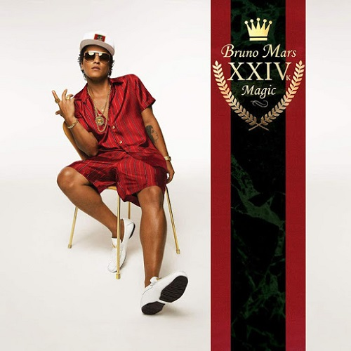

Outros Indicados: Post Malone – Beerbongs & Bentleys, Black Panther: The Album, Music from and Inspired by, Brandi Carlile – By the Way, I Forgive You, Janelle Monáe – Dirty Computer, H.E.R. – H.E.R., Cardi B – Invasion of Privacy, Drake – Scorpion"
Saiba mais

Album: Bruno Mars – 24K Magic
Ano: 2018
GanhouGrammy: Sim
OutrosIndicados: Childish Gambino – “Awaken, My Love!” , Kendrick Lamar – DAMN., Jay-Z – 4:44, Lorde – Melodrama
Saiba mais
Album: Adele – 25
Ano: 2017
GanhouGrammy: Sim
OutrosIndicados: Beyoncé – Lemonade, Justin Bieber – Purpose, Sturgill Simpson – A Sailor’s Guide to Earth, Drake – Views]
Saiba mais